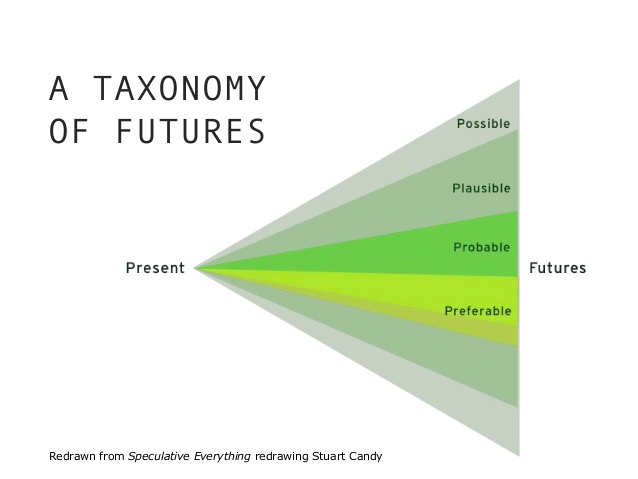

Slippy web maps, you complete me:
A friendly step-by-step guide to serving up your own slippy web map tiles with tilehut.js
Joey Lee /
github: @joeyklee /
twitter: @leejoeyk
Prepared for FOSS4G, Boston, Aug. 2017

A
Quick
Detour
↓
@leejoeyk #geography #mediaarts #research
@moovellab #speculativedesign #dataviz #mobility
#speculativedesign #design4discussion
roadstorome.moovellab.com/
greenskin.moovellab.com
#moovellab #hiring #stuttgart
Survey
insights
📊📝

Hubway Data - January 2017
CSV Data processed → group-by → routed using GraphHopper → to geojson:
+ 'start station id'
+ 'start station name'
+ 'start station latitude'
+ 'start station longitude'
+ 'end station id'
+ 'end station name'
+ 'end station latitude'
+ 'end station longitude'
+ 'count'
+ 'total_duration' (in seconds)
http://hubwaydatachallenge.org/submission/28/
http://hubwaydatachallenge.org/submission/41/
Let's
Map
The
Counts!

GeoJSON → MBTiles
Install Tippecanoe, navigate into the directory and run:
tippecanoe -o hubway-routed.mbtiles -maximum-zoom 13 -l hubwayRouted 201701_hubway_routes_all.geojson
- tippecanoe: this calls the tippecanoe function
- -o hubway-routed.mbtiles: says, "our output file will be called hubway-routed.mbtiles in the data folder"
- -l hubwayRouted: says, "call our mbtiles hubwayRouted" - we will need this for when we style our tiles; without this, it would call it the name of the file "201701hubwayroutesallgeojson" and that's not so nice.
- -maximum-zoom 13: tells tippecanoe to only produce tiles to a max of zoom level 13.
- 201701_hubway_routes_all.geojson: is the geojson file of our routed bike trips.

Serve up your tiles locally
Download Tilehut.js → npm install → npm start
# change into the tilehut directory
cd tilehut
# this installs all the dependencies
npm install
# this starts the server
node server.js
# check in your browser: http://localhost:8000/tiles-world-simple/map/
Make sure tilehut is running and go to:http://localhost:8000/tiles-world-simple/map/
Getting comfy with the syntax
Since we're going to be working with vector tiles, let's have a look at the `examples/simplemap_vector` directory. Navigate over and double-click on `index.html`. you should see something like this:
Getting the meta information from your tiles: meta.json
With tilehut.js running → check the meta data of the mbtiles in the data folder by:
"http://0.0.0.0:8000/the-name-of-your-mbtile-file/meta.json"
The response will be a JSON:
{
"scheme": "tms",
"basename": "tiles-world-vector.mbtiles",
"id": "tiles-world-vector",
"filesize": 1703936,
"name": "tiles-world-vector.mbtiles",
"description": "tiles-world-vector.mbtiles",
"version": "2",
//... MORE USEFUL PROPERTIES...
}
Serve up your bike trips tiles

examples/01-trips
examples/02-trips-refactored
examples/03-trips-and-stations

Remix the examples → create your own index.html → turn it into a git repository
# We're first going to initialize the repository with:
git init
# next we will add all the files we want to be tracked by git:
git add .
# last, we commit all of our files, in our initial commit:
git commit -m "initial commit"
Sign up with Heroku → install Heroku commandline tools → deploy Tilehut to Heroku
you will be asked for your email and password
heroku login
create an app which I will call `hubway-tiles` (you'll have to come up with another name since Heroku won't accept duplicates... get creative!):
# heroku create {name of your app}
heroku create hubway-tiles
# Send it!
git push heroku master
# this will print out the logs from the heroku server
heroku logs
→ https://hubway-tiles.herokuapp.com/ → 😊
Now you can change the links to your locally developed project
map.addSource('tilehut-hubway-routes', {
"type": "vector",
"tiles": [
"http://localhost:8000/hubway-routed/{z}/{x}/{y}.pbf"
]
});
↓↓↓↓↓↓↓↓↓↓↓↓↓↓↓↓↓
map.addSource('tilehut-hubway-routes', {
"type": "vector",
"tiles": [
"https://hubway-tiles.herokuapp.com/hubway-routed/{z}/{x}/{y}.pbf"
]
});
Remix → Remake → Reapply
Use Github Pages to publish your map & style online!


Thanks for joining!
Many thanks to moovel Lab & FOSS4G!